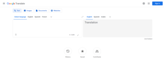
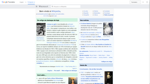
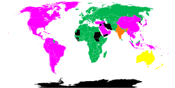
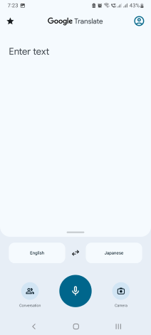

Google Translate
Source: https://en.wikipedia.org/wiki/Google_Translate
Category: products_consumer
Depth: 1
Summary
Google Translate is a multilingual neural machine translation service developed by Google to translate text, documents and websites from one language into another. It offers a website interface, a mobile app for Android and iOS, and an API that helps developers build browser extensions and software applications. As of April 2026, Google Translate supports 249 languages and language varieties at various levels. It served over 200 million people daily in May 2013, and over 500 million total users as of April 2016, with more than 100 billion words translated daily.
Images




Full Article
Multilingual neural machine translation service
Google Translate is a multilingual neural machine translation service developed by Google to translate text, documents and websites from one language into another. It offers a website interface, a mobile app for Android and iOS, and an API that helps developers build browser extensions and software applications. As of April 2026, Google Translate supports 249 languages and language varieties at various levels. It served over 200 million people daily in May 2013, and over 500 million total users as of April 2016[update], with more than 100 billion words translated daily.
Launched in April 2006 as a statistical machine translation service, it originally used United Nations and European Parliament documents and transcripts to gather linguistic data. Rather than translating languages directly, it first translated text to English and then pivoted to the target language in most of the language combinations it posited in its grid, with a few exceptions including Catalan–Spanish. During a translation, it looked for patterns in millions of documents to help decide which words to choose and how to arrange them in the target language. In recent years, it has used a deep learning model to power its translations. Its accuracy, which has been criticized[by whom?] on several occasions, has been measured to vary greatly across languages. In November 2016, Google announced that Google Translate would switch to a neural machine translation engine – Google Neural Machine Translation (GNMT) – which translated "whole sentences at a time, rather than just piece by piece. It uses this broader context to help it figure out the most relevant translation, which it then rearranges and adjusts to be more like a human speaking with proper grammar".
History
Google Translate is a web-based free-to-use translation service developed by Google in April 2006. It translates multiple forms of texts and media such as words, phrases and webpages.
Originally, Google Translate was released as a statistical machine translation (SMT) service. The input text had to be translated into English first before being translated into the selected language. Since SMT uses predictive algorithms to translate text, it had poor grammatical accuracy. Despite this, Google initially did not hire experts to resolve this limitation due to the ever-evolving nature of language.
In January 2010, Google introduced an Android app and iOS version in February 2011 to serve as a portable personal interpreter. As of February 2010, it was integrated into browsers such as Chrome and was able to pronounce the translated text, automatically recognize words in a picture and spot unfamiliar text and languages.
In May 2014, Google acquired Word Lens to improve the quality of visual and voice translation. It is able to scan text or a picture using the device and have it translated instantly. Moreover, the system automatically identifies foreign languages and translates speech without requiring individuals to tap the microphone button whenever speech translation is needed.
In November 2016, Google transitioned its translating method to a system called neural machine translation. It uses deep learning techniques to translate whole sentences at a time, which has been measured to be more accurate between English and French, German, Spanish, and Chinese. No measurement results have been provided by Google researchers for GNMT from English to other languages, other languages to English, or between language pairs that do not include English. As of 2018, it translates more than 100 billion words a day.
In 2017, Google Translate was used during a court hearing when court officials at Teesside Magistrates' Court failed to book an interpreter for the Chinese defendant.
A petition for Google to add Cree to Google Translate was created in 2021, but it was not one of the languages in development at the time of the Translate Community's closure.
At the end of September 2022, Google Translate was discontinued in mainland China, which Google said was due to "low usage".
In 2024, a record of 110 languages including Cantonese, Tok Pisin and some regional languages in Russia including Bashkir, Chechen, Ossetian and Crimean Tatar were added. The languages were added through the help of the PaLM 2 Generative AI model.
Functions
Google Translate can translate multiple forms of text and media, which includes text, speech, and text within still or moving images. Specifically, its functions include:
- Written Words Translation: a function that translates written words or text to a foreign language.
- Website Translation: a function that translates a whole webpage to selected languages.
- Document Translation: a function that translates a document uploaded by the users to selected languages. The documents should be in the form of: .doc, .docx, .odf, .pdf, .ppt, .pptx, .ps, .rtf, .txt, .xls, .xlsx.
- Speech Translation: a function that instantly translates spoken language into the selected foreign language.
- Mobile App Translation: in 2018, Google introduced its new Google Translate feature called "Tap to Translate", which made instant translation accessible inside any app without exiting or switching it.
- Image Translation: a function that identifies text in a picture taken by the users and translates text on the screen instantly by images.
- Handwritten Translation: a function that translates language that are handwritten on the phone screen or drawn on a virtual keyboard without the support of a keyboard.
- Bilingual Conversation Translation: a function that translates conversations in multiple languages.
- Transcription: a function that transcribes speech in different languages.
For most of its features, Google Translate provides the pronunciation, dictionary, and listening to translation. Additionally, Google Translate has introduced its own Translate app, so translation is available with a mobile phone in offline mode.
Features
Web interface
Google Translate produces approximations across languages of multiple forms of text and media, including text, speech, websites, or text on display in still or live video images. For some languages, Google Translate can synthesize speech from text, and in certain pairs it is possible to highlight specific corresponding words and phrases between the source and target text. Results are sometimes shown with dictional information below the translation box, but it is not a dictionary and has been shown to invent translations in all languages for words it does not recognize. If "Detect language" is selected, text in an unknown language can be automatically identified. In the web interface, users can suggest alternate translations, such as for technical terms, or correct mistakes. These suggestions may be included in future updates to the translation process. If a user enters a URL in the source text, Google Translate will produce a hyperlink to a machine translation of the website. Users can save translation proposals in a "phrasebook" for later use, and a shareable URL is generated for each translation. For some languages, text can be entered via an on-screen keyboard, whether through handwriting recognition or speech recognition. It is possible to enter searches in a source language that are first translated to a destination language allowing one to browse and interpret results from the selected destination language in the source language.
Texts written in the Arabic, Cyrillic, Devanagari and Greek scripts can be automatically transliterated from their phonetic equivalents written in the Latin alphabet. The browser version of Google Translate provides the option to show phonetic equivalents of text translated from Japanese to English. The same option is not available on the paid API version.
Many of the more popular languages have a "text-to-speech" audio function that is able to read back a text in that language, up to several hundred words or so. In the case of pluricentric languages, the accent depends on the region: for English, in the Americas, most of the Asia–Pacific and West Asia, the audio uses a female General American accent, whereas in Europe, Hong Kong, Malaysia, Singapore, Guyana and all other parts of the world, a female British (Received Pronunciation) accent is used, except for a special General Australian accent used in Australia, New Zealand and Norfolk Island, and an Indian English accent used in India; for Spanish, in the Americas, a Latin American accent is used, while in other parts of the world, a Castilian accent is used; for French, a Quebec accent is used in Canada, while in other parts of the world, a standard European accent is used; for Bengali, a male Bangladeshi accent is used, except in India, where a special female Indian Bengali accent is used instead. Until March 2023, some less widely spoken languages used the open-source eSpeak synthesizer for their speech; producing a robotic, awkward voice that may be difficult to understand.
Browser integration
Google Translate is available in some web browsers as an optional downloadable extension that can run the translation engine, which allow right-click command access to the translation service. In February 2010, Google Translate was integrated into the Google Chrome browser by default, for optional automatic webpage translation.
Mobile app
The Google Translate app for Android and iOS supports 249 languages and can propose translations for 37 languages via photo, 32 via voice in "conversation mode", and 27 via live video imagery in "augmented reality mode".
The Android app was released in January 2010, and for iOS on February 8, 2011, after an HTML5 web application was released for iOS users in August 2008. The Android app is compatible with devices running at least Android 2.1, while the iOS app is compatible with iPod Touches, iPads and iPhones updated to iOS 7.0+.
A January 2011 Android version experimented with a "Conversation Mode" that aims to allow users to communicate fluidly with a nearby person in another language. Originally limited to English and Spanish, the feature received support for 12 new languages, still in testing, the following October.
The 'Camera input' functionality allows users to take a photograph of a document, signboard, etc. Google Translate recognises the text from the image using optical character recognition (OCR) technology and gives the translation. Camera input is not available for all languages.
In January 2015, the apps gained the ability to propose translations of physical signs in real time using the device's camera, as a result of Google's acquisition of the Word Lens app. The original January launch only supported seven languages, but a July update added support for 20 new languages, with the release of a new implementation that utilizes convolutional neural networks, and also enhanced the speed and quality of Conversation Mode translations (augmented reality). The feature was subsequently renamed Instant Camera. The technology underlying Instant Camera combines image processing and optical character recognition, then attempts to produce cross-language equivalents using standard Google Translate estimations for the text as it is perceived.
On May 11, 2016, Google introduced Tap to Translate for Google Translate for Android. Upon highlighting text in an app that is in a foreign language, Translate will pop up inside of the app and offer translations.
API
On May 26, 2011, Google announced that the Google Translate API for software developers had been deprecated and would cease functioning. The Translate API page stated the reason as "substantial economic burden caused by extensive abuse" with an end date set for December 1, 2011. In response to public pressure, Google announced in June 2011 that the API would continue to be available as a paid service.
Because the API was used in numerous third-party websites and apps, the original decision to deprecate it led some developers to criticize Google and question the viability of using Google APIs in their products.
Google Assistant
Google Translate also provides translations for Google Assistant and the devices that Google Assistant runs on such as Google Nest and Pixel Buds.
Supported languages
As of April 2026, the following 249 languages, dialects and language varieties written in different scripts (240 unique languages and dialects) are supported by Google Translate.
- Abkhaz
- Acehnese
- Acholi
- Afar
- Afrikaans
- Albanian
- Alur
- Amharic
- Arabic
- Armenian
- Assamese
- Avar
- Awadhi
- Aymara
- Azerbaijani
- Balinese
- Baluchi
- Bambara
- Baoulé
- Bashkir
- Basque
- Batak Karo
- Batak Simalungun
- Batak Toba
- Belarusian
- Bemba
- Bengali
- Betawi
- Bhojpuri
- Bikol
- Bosnian
- Breton
- Bulgarian
- Buryat
- Cantonese
- Catalan
- Cebuano
- Chamorro
- Chechen
- Chichewa
- Chinese (Simplified)
- Chinese (Traditional)
- Chuukese
- Chuvash
- Corsican
- Crimean Tatar (Cyrillic)
- Crimean Tatar (Latin)
- Croatian
- Czech
- Danish
- Dari
- Dhivehi
- Dinka
- Dogri
- Dombe
- Dutch
- Dyula
- Dzongkha
- English
- Esperanto
- Estonian
- Ewe
- Faroese
- Fijian
- Filipino
- Finnish
- Fon
- French
- French (Canada)
- Frisian
- Friulian
- Fulani
- Ga
- Galician
- Georgian
- German
- Greek
- Guarani
- Gujarati
- Haitian Creole
- Hakha Chin
- Hausa
- Hawaiian
- Hebrew
- Hiligaynon
- Hindi
- Hmong
- Hungarian
- Hunsrik
- Iban
- Icelandic
- Igbo
- Ilocano
- Indonesian
- Inuktut (Latin)
- Inuktut (Syllabics)
- Irish
- Italian
- Jamaican Patois
- Japanese
- Javanese
- Jingpo
- Kalaallisut
- Kannada
- Kanuri
- Kapampangan
- Kazakh
- Khasi
- Khmer
- Kiga
- Kikongo
- Kinyarwanda
- Kituba
- Kokborok
- Komi
- Konkani
- Korean
- Krio
- Kurdish (Kurmanji)
- Kurdish (Sorani)
- Kyrgyz
- Lao
- Latgalian
- Latin
- Latvian
- Ligurian
- Limburgish
- Lingala
- Lithuanian
- Lombard
- Luganda
- Luo
- Luxembourgish
- Macedonian
- Madurese
- Maithili
- Makassar
- Malagasy
- Malay
- Malay (Jawi)
- Malayalam
- Maltese
- Mam
- Manx
- Maori
- Marathi
- Marshallese
- Marwadi
- Mauritian Creole
- Meadow Mari
- Meiteilon (Manipuri)
- Minang
- Mizo
- Mongolian
- Myanmar (Burmese)
- Nahuatl (Eastern Huasteca)
- Ndau
- Ndebele (South)
- Nepalbhasa (Newari)
- Nepali
- NKo
- Norwegian (Bokmål)
- Nuer
- Occitan
- Odia (Oriya)
- Oromo
- Ossetian
- Pangasinan
- Papiamento
- Pashto
- Persian
- Polish
- Portuguese (Brazil)
- Portuguese (Portugal)
- Punjabi (Gurmukhi)
- Punjabi (Shahmukhi)
- Quechua
- Qʼeqchiʼ
- Romani
- Romanian
- Rundi
- Russian
- Sami (North)
- Samoan
- Sango
- Sanskrit
- Santali (Latin)
- Santali (Ol Chiki)
- Scots Gaelic
- Sepedi
- Serbian
- Sesotho
- Seychellois Creole
- Shan
- Shona
- Sicilian
- Silesian
- Sindhi
- Sinhala
- Slovak
- Slovenian
- Somali
- Spanish
- Sundanese
- Susu
- Swahili
- Swati
- Swedish
- Tahitian
- Tajik
- Tamazight
- Tamazight (Tifinagh)
- Tamil
- Tatar
- Telugu
- Tetum
- Thai
- Tibetan
- Tigrinya
- Tiv
- Tok Pisin
- Tongan
- Tshiluba
- Tsonga
- Tswana
- Tulu
- Tumbuka
- Turkish
- Turkmen
- Tuvan
- Twi
- Udmurt
- Ukrainian
- Urdu
- Uyghur
- Uzbek
- Venda
- Venetian
- Vietnamese
- Waray
- Welsh
- Wolof
- Xhosa
- Yakut
- Yiddish
- Yoruba
- Yucatec Maya
- Zapotec
- Zulu
Stages
History
(by chronological order of introduction)
- 1st stage
- English to and from French
- English to and from German
- English to and from Spanish
- 2nd stage
- English to and from Portuguese (Brazil)
- 3rd stage
- English to and from Italian
- 4th stage
- English to and from Chinese (Simplified)
- English to and from Japanese
- English to and from Korean
- 5th stage (launched April 28, 2006)
- English to and from Arabic
- 6th stage (launched December 16, 2006)
- English to and from Russian
- 7th stage (launched February 9, 2007)
- English to and from Chinese (Traditional)
- Chinese ((Simplified) to and from Traditional)
- 8th stage (all 25 language pairs use Google's machine translation system) (launched October 22, 2007)
- English to and from Dutch
- English to and from Greek
- 9th stage
- English to and from Hindi
- 10th stage (as of this stage, translation can be done between any two languages, using English as an intermediate step, if needed) (launched May 8, 2008)
- 11th stage (launched September 25, 2008)
- 12th stage (launched January 30, 2009)
- 13th stage (launched June 19, 2009)
- 14th stage (launched August 24, 2009)
- 15th stage (launched November 19, 2009)
- The Beta stage is finished. Users can now choose to have the romanization written for Belarusian, Bulgarian, Chinese, Greek, Hindi, Japanese, Korean, Russian, Thai and Ukrainian. For translations from Arabic, Hindi and Persian, the user can enter a Latin transliteration of the text and the text will be transliterated to the native script for these languages as the user is typing. The text can now be read by a text-to-speech program in English, French, German and Italian.
- 16th stage (launched January 30, 2010)
- 17th stage (launched April 2010)
- Speech program launched in Hindi and Spanish.
- 18th stage (launched May 5, 2010)
- Speech program launched in Afrikaans, Albanian, Catalan, Chinese (Mandarin), Croatian, Czech, Danish, Dutch, Finnish, Greek, Hungarian, Icelandic, Indonesian, Latvian, Macedonian, Norwegian, Polish, Portuguese, Romanian, Russian, Serbian, Slovak, Swahili, Swedish, Turkish, Vietnamese and Welsh (based on eSpeak).
- 19th stage (launched May 13, 2010)
- 20th stage (launched June 2010)
- Provides romanization for Arabic.
- 21st stage (launched September 2010)
- Allows phonetic typing for Arabic, Greek, Hindi, Persian, Russian, Serbian and Urdu.
- Latin
- 22nd stage (launched December 2010)
- Romanization of Arabic removed.
- Spell check added.
- For some languages, Google replaced text-to-speech synthesizers from eSpeak's robot voice to native speaker's nature voice technologies made by SVOX (Chinese, Czech, Danish, Dutch, Finnish, Greek, Hungarian, Norwegian, Polish, Portuguese, Russian, Swedish and Turkish), and also the old versions of French, German, Italian and Spanish; Latin uses the same synthesizer as Italian.
- Speech program launched in Arabic, Japanese and Korean.
- 23rd stage (launched January 2011)
- Choice of different translations for a word.
- 24th stage (launched June 2011)
- 25th stage (launched July 2011)
- Translation rating introduced.
- 26th stage (launched January 2012)
- Dutch male voice synthesizer replaced with female.
- Elena by SVOX replaced the Slovak eSpeak voice.
- Transliteration of Yiddish added.
- 27th stage (launched February 2012)
- Speech program launched in Thai.
- Esperanto
- 28th stage (launched September 2012)
- 29th stage (launched October 2012)
- Transliteration of Lao added. (alpha status)
- 30th stage (launched October 2012)
- New speech program launched in English.
- 31st stage (launched November 2012)
- New speech program in French, German, Italian, Latin and Spanish.
- 32nd stage (launched March 2013)
- Phrasebook added.
- 33rd stage (launched April 2013)
- 34th stage (launched May 2013)
- 35th stage (launched May 2013)
- 16 additional languages can be used with camera-input: Bulgarian, Catalan, Croatian, Danish, Estonian, Finnish, Hungarian, Indonesian, Icelandic, Latvian, Lithuanian, Norwegian, Romanian, Slovak, Slovenian and Swedish.
- 36th stage (launched December 2013)
- 37th stage (launched June 2014)
- Definition of words added.
- 38th stage (launched December 2014)
- 39th stage (launched October 2015)
- Transliteration of Arabic restored.
- 40th stage (launched November 2015)
- 41st stage (launched February 2016)
- Aurebesh removed.
- Speech program launched in Bengali.
- Amharic
- Corsican
- Hawaiian
- Kurdish (Kurmanji)
- Kyrgyz
- Luxembourgish
- Pashto
- Samoan
- Scottish Gaelic
- Shona
- Sindhi
- West Frisian
- Xhosa
- 42nd stage (launched September 2016)
- Speech program launched in Ukrainian.
- 43rd stage (launched December 2016)
- Speech program launched in Khmer and Sinhala.
- 44th stage (launched June 2018)
- Speech program launched in Burmese, Malayalam, Marathi, Nepali and Telugu.
- 45th stage (launched September 2019)
- Speech program launched in Gujarati, Kannada and Urdu.
- 46th stage (launched February 2020)
- 47th stage (launched February 2021)
- Speech program launched in Afrikaans, Bulgarian, Catalan, Icelandic, Latvian, and Serbian (changed from eSpeak to a natural voice).
- New speech system (WaveNet) for several languages.
- 48th stage (launched January 2022)
- Speech program launched in Hebrew.
- 49th stage (launched May 2022)
- 50th stage (launched November 2022)
- Speech program launched in Albanian, Bosnian and Swahili (changed from eSpeak to natural).
- New speech program launched in Malayalam, Marathi and Tamil.
- 51st stage (launched March 2023)
- Speech program launched in Croatian (changed from eSpeak to natural).
- 52nd stage (launched April 2023)
- Speech program launched in Welsh (only on Google search results).
- New speech programs launched in Chinese (simplified and traditional), German, Indonesian, Malay, Malayalam, Tamil, and Telugu (Chinese, German, Indonesian, Malayalam and Tamil reverted from WaveNet).
- 53rd stage (launched June 2023)
- Speech program launched in Lithuanian and Punjabi.
- 54th stage (launched June 2024)
- Abkhaz
- Acehnese
- Acholi
- Afar
- Alur
- Avar
- Awadhi
- Balinese
- Baluchi
- Baoulé
- Bashkir
- Batak Karo
- Batak Simalungun
- Batak Toba
- Bemba
- Betawi
- Bikol
- Breton
- Buryat
- Cantonese
- Chamorro
- Chechen
- Chuukese
- Chuvash
- Crimean Tatar (Cyrillic)
- Dari
- Dinka
- Dombe
- Dyula
- Dzongkha
- Faroese
- Fijian
- Fon
- Friulian
- Fulani
- Ga
- Hakha Chin
- Hiligaynon
- Hunsrik
- Iban
- Jamaican Patois
- Jingpo
- Kalaallisut
- Kanuri
- Kapampangan
- Khasi
- Kiga
- Kikongo
- Kituba
- Kokborok
- Komi
- Latgalian
- Ligurian
- Limburgish
- Lombard
- Luo
- Madurese
- Makassar
- Malay (Jawi)
- Mam
- Manx
- Marshallese
- Marwadi
- Mauritian Creole
- Meadow Mari
- Minang
- Nahuatl (Eastern Huasteca)
- Ndau
- Ndebele (South)
- Nepalbhasa (Newari)
- NKo
- Nuer
- Occitan
- Ossetian
- Pangasinan
- Papiamento
- Portuguese (Portugal)
- Punjabi (Shahmukhi)
- Qʼeqchiʼ
- Romani
- Rundi
- Sami (North)
- Sango
- Santali
- Seychellois Creole
- Shan
- Sicilian
- Silesian
- Susu
- Swati
- Tahitian
- Tamazight
- Tamazight (Tifinagh)
- Tetum
- Tibetan
- Tiv
- Tok Pisin
- Tongan
- Tswana
- Tulu
- Tumbuka
- Tuvan
- Udmurt
- Venda
- Venetian
- Waray
- Wolof
- Yakut
- Yucatec Maya
- Zapotec
- Speech program launched in Amharic, Bulgarian, Cantonese, Galician, Hausa, and Welsh
- 55th stage (launched October 2024)
Translation methodology
In April 2006, Google Translate launched with a statistical machine translation engine.
Google Translate does not apply grammatical rules, since its algorithms are based on statistical or pattern analysis rather than traditional rule-based analysis. The system's original creator, Franz Josef Och, has criticized the effectiveness of rule-based algorithms in favor of statistical approaches. Original versions of Google Translate were based on a method called statistical machine translation, and more specifically, on research by Och who won the DARPA contest for speed machine translation in 2003. Och was the head of Google's machine translation group until leaving to join Human Longevity, Inc. in July 2014.
Google Translate does not directly translate from one language to another (L1 → L2). Instead, it often translates first to English and then to the target language (L1 → EN → L2). However, because English, like all human languages, is ambiguous and depends on context, this can cause translation errors. For example, translating vous from French to Russian gives vous → you → ты OR Bы/вы. If Google were using an unambiguous, artificial language as the intermediary, it would be vous → you → Bы/вы OR tu → thou → ты. Such a suffixing of words disambiguates their different meanings. Hence, publishing in English, using unambiguous words, providing context, or using expressions such as "you all" may or may not make a better one-step translation depending on the target language.
The following languages do not have a direct Google translation to or from English. These languages are translated through the indicated intermediate language (which in most cases is closely related to the desired language but more widely spoken) in addition to through English:[citation needed]
- Belarusian (be ↔ ru ↔ en ↔ other);
- Catalan (ca ↔ es ↔ en ↔ other);
- Galician (gl ↔ pt ↔ en ↔ other);
- Haitian Creole (ht ↔ fr ↔ en ↔ other);
- Korean (ko ↔ ja ↔ en ↔ other);
- Slovak (sk ↔ cs ↔ en ↔ other);
- Ukrainian (uk ↔ ru ↔ en ↔ other);
- Urdu (ur ↔ hi ↔ en ↔ other).
According to Och, a solid base for developing a usable statistical machine translation system for a new pair of languages from scratch would consist of a bilingual text corpus (or parallel collection) of more than 150–200 million words, and two monolingual corpora each of more than a billion words. Statistical models from these data are then used to translate between those languages. To acquire this huge amount of linguistic data, Google used United Nations and European Parliament documents and transcripts. The UN typically publishes documents in all six official UN languages, which has produced a very large 6-language corpus. Google representatives have been involved with domestic conferences in Japan where it has solicited bilingual data from researchers.
When Google Translate generates a translation proposal, it looks for patterns in hundreds of millions of documents to help decide on the best translation. By detecting patterns in documents that have already been translated by human translators, Google Translate makes informed guesses (AI) as to what an appropriate translation should be.
Before October 2007, for languages other than Arabic, Chinese and Russian, Google Translate was based on SYSTRAN, a software engine which is still used by several other online translation services such as Babel Fish (now defunct). From October 2007, Google Translate used proprietary, in-house technology based on statistical machine translation instead, before transitioning to neural machine translation.
Google Translate Community
Google used to have crowdsourcing features for volunteers to be a part of its "Translate Community", intended to help improve Google Translate's accuracy. Volunteers could select up to five languages to help improve translation; users could verify translated phrases and translate phrases in their languages to and from English, helping to improve the accuracy of translating more rare and complex phrases. In August 2016, a Google Crowdsource app was released for Android users, in which translation tasks are offered. There were three ways to contribute. First, Google showed a phrase that one should type in the translated version. Second, Google showed a proposed translation for a user to agree, disagree, or skip. Third, users could suggest translations for phrases where they think they can improve on Google's results. Tests in 44 languages showed that the "suggest an edit" feature led to an improvement in a maximum of 40% of cases over four years. Despite its role in improving translation quality and expanding language coverage, Google closed the Translate Community on March 28, 2024.
Statistical machine translation
Although Google has deployed a new system called neural machine translation for better quality translation, there are languages that still use the traditional translation method called statistical machine translation. It is a rule-based translation method that uses predictive algorithms to guess ways to translate texts in foreign languages. It aims to translate whole phrases rather than single words then gather overlapping phrases for translation. Moreover, it also analyzes bilingual text corpora to generate a statistical model that translates texts from one language to another.
Neural machine translation
In September 2016, a research team at Google announced the development of the Google Neural Machine Translation system (GNMT) to increase fluency and accuracy in Google Translate and in November announced that Google Translate would switch to GNMT.
Google Translate's neural machine translation system used a large end-to-end artificial neural network that attempts to perform deep learning, in particular, long short-term memory networks. GNMT improved the quality of translation over SMT in some instances because it uses an example-based machine translation (EBMT) method in which the system "learns from millions of examples." According to Google researchers, it translated "whole sentences at a time, rather than just piece by piece. It uses this broader context to help it figure out the most relevant translation, which it then rearranges and adjusts to be more like a human speaking with proper grammar". GNMT's "proposed architecture" of "system learning" has been implemented on over a hundred languages supported by Google Translate. With the end-to-end framework, Google states but does not demonstrate for most languages that "the system learns over time to create better, more natural translations." The GNMT network attempts interlingual machine translation, which encodes the "semantics of the sentence rather than simply memorizing phrase-to-phrase translations", and the system did not invent its own universal language, but uses "the commonality found in between many languages". GNMT was first enabled for eight languages: to and from English and Chinese, French, German, Japanese, Korean, Portuguese, Spanish and Turkish. In March 2017, it was enabled for Hindi, Russian and Vietnamese, followed by Bengali, Gujarati, Indonesian, Kannada, Malayalam, Marathi, Punjabi, Tamil and Telugu in April.
Since 2020, Google has phased out GNMT and has implemented deep learning networks based on transformers.
Accuracy
| icon | This section needs additional citations for verification. Please help improve this article by adding citations to reliable sources in this section. Unsourced material may be challenged and removed. (October 2025) (Learn how and when to remove this message) |
Google Translate is not as reliable as human translation. When text is well-structured, written using formal language, with simple sentences, relating to formal topics for which training data is ample, it often produces conversions similar to human translations between English and a number of high-resource languages. Accuracy decreases for those languages when fewer of those conditions apply, for example when sentence length increases or the text uses familiar or literary language. For many other languages vis-à-vis English, it can produce the gist of text in those formal circumstances. Human evaluation from English to all 102 languages shows that the main idea of a text is conveyed more than 50% of the time for 35 languages. For 67 languages, a minimally comprehensible result is not achieved 50% of the time or greater. A few studies have evaluated Chinese,[citation needed] French,[citation needed] German,[citation needed] and Spanish[citation needed] to English, but no systematic human evaluation has been conducted from most Google Translate languages to English. Speculative language-to-language scores extrapolated from English-to-other measurements indicate that Google Translate will produce translation results that convey the gist of a text from one language to another more than half the time in about 1% of language pairs, where neither language is English. Research conducted in 2011 showed that Google Translate got a slightly higher score than the UCLA minimum score for the English Proficiency Exam. Due to its identical choice of words without considering the flexibility of choosing alternative words or expressions, it produces a relatively similar translation to human translation from the perspective of formality, referential cohesion, and conceptual cohesion. Moreover, a number of languages are translated into a sentence structure and sentence length similar to a human translation. Furthermore, Google carried out a test that required native speakers of each language to rate the translation on a scale between 0 and 6, and Google Translate scored 5.43 on average.
When used as a dictionary to translate single words, Google Translate is highly inaccurate because it must guess between polysemic words. Among the top 100 words in the English language, which make up more than 50% of all written English, the average word has more than 15 senses, which makes the odds against a correct translation about 15 to 1 if each sense maps to a different word in the target language. Most common English words have at least two senses, which produces 50/50 odds in the likely case that the target language uses different words for those different senses. The odds are similar from other languages to English. Google Translate makes statistical guesses that raise the likelihood of producing the most frequent sense of a word, with the consequence that an accurate translation will be unobtainable in cases that do not match the majority or plurality corpus occurrence. The accuracy of single-word predictions has not been measured for any language. Because almost all non-English language pairs pivot through English, the odds against obtaining accurate single-word translations from one non-English language to another can be estimated by multiplying the number of senses in the source language with the number of senses each of those terms have in English. When Google Translate does not have a word in its vocabulary, it makes up a result as part of its algorithm.
Limitations
Google Translate, like other automatic translation tools, has its limitations, struggles with polysemy (the multiple meanings a word may have) and multiword expressions (terms that have meanings that cannot be understood or translated by analyzing the individual word units that compose them). A word in a foreign language might have two different meanings in the translated language. This might lead to mistranslation. Additionally, grammatical errors remain a major limitation to the accuracy of Google Translate. Google Translate struggles to differentiate between imperfect and perfect aspects in Romance languages. The subjunctive mood is often erroneous.[citation needed] Moreover, the formal second person (vous) is often chosen, whatever the context.[citation needed] Since its English reference material contains only "you" forms, it has difficulty translating a language with "you all" or formal "you" variations.
Due to differences between languages in investment, research, and the extent of digital resources, the accuracy of Google Translate varies greatly among languages. Some languages produce better results than others. Most languages from Africa, Asia, and the Pacific, tend to score poorly in relation to the scores of many well-financed European languages, Afrikaans and Chinese being the high-scoring exceptions from their continents. No languages indigenous to Australia are included within Google Translate. Higher scores for European can be partially attributed to the Europarl Corpus, a trove of documents from the European Parliament that have been professionally translated by the mandate of the European Union into as many as 21 languages. A 2010 analysis indicated that French to English translation is relatively accurate, and 2011 and 2012 analyses showed that Italian to English translation is relatively accurate as well. However, if the source text is shorter, rule-based machine translations often perform better; this effect is particularly evident in Chinese to English translations. While edits of translations may be submitted, in Chinese specifically one cannot edit sentences as a whole. Instead, one must edit sometimes arbitrary sets of characters, leading to incorrect edits.
The service can be used as a dictionary by typing in words. One can translate from a book by using a scanner and an OCR like Google Drive. In its Written Words Translation function, there is a word limit on the amount of text that can be translated at once. Therefore, long text should be transferred to a document form and translated through its Document Translate function.
Open-source licenses and components
| Language | WordNet | License |
|---|---|---|
| Albanian | Albanet | CC BY 3.0/GPL 3 |
| Arabic | Arabic WordNet | CC BY-SA 3.0 |
| Catalan | Multilingual Central Repository | CC BY 3.0 |
| Chinese | Chinese Wordnet | Wordnet |
| Danish | DanNet | Wordnet |
| English | Princeton WordNet | Wordnet |
| Finnish | FinnWordNet | Wordnet |
| French | WOLF (WOrdnet Libre du Français) | CeCILL-C |
| Galician | Multilingual Central Repository | CC BY 3.0 |
| Haitian Creole | MIT-Haiti Initiative | CC BY 4.0 |
| Hebrew | Hebrew Wordnet | Wordnet |
| Indonesian | Wordnet Bahasa | MIT |
| Italian | MultiWordNet | CC BY 3.0 |
| Japanese | Japanese Wordnet | Wordnet |
| Malay | Wordnet Bahasa | MIT |
| Norwegian | Norwegian Wordnet | Wordnet |
| Persian | Persian Wordnet | Free-to-use |
| Polish | plWordNet | Wordnet |
| Portuguese | OpenWN-PT | CC BY-SA 3.0 |
| Spanish | Multilingual Central Repository | CC BY 3.0 |
| Thai | Thai Wordnet | Wordnet |
Irish language data from Foras na Gaeilge's New English-Irish Dictionary. (English database designed and developed for Foras na Gaeilge by Lexicography MasterClass Ltd.) Welsh language data from Gweiadur by Gwerin.
Certain content is copyrighted by Oxford University Press, United States. Some phrase translations come from Wikitravel.
Reviews
Shortly after launching the translation service for the first time, Google won an international competition for English–Arabic and English–Chinese machine translation.
Translation mistakes and oddities
Since Google Translate uses statistical matching to translate, translated text can often include apparently nonsensical and obvious errors, often swapping common terms for similar but nonequivalent common terms in the other language, as well as inverting sentence meaning. Novelty websites like Bad Translator and Translation Party have used the service to produce humorous text by translating back and forth between multiple languages, similar to the children's game telephone.
Certain texts in Japanese have shown to be translated to "Replying to @sarah_mcdonald(s)" in English, often with no relation to the source text. Examples include "もーるるるるるるるる", "バチバチで草" and "絵にfう". This has been asked on multiple platforms, including YouTube.
See also
- Apertium
- Baidu Fanyi
- Comparison of machine translation applications
- DeepL Translator
- Google Dictionary
- Google Translator Toolkit
- List of Google products
- Microsoft Translator
- PROMT
- Speech Recognition & Synthesis
- SYSTRAN
- Translate (Apple)
- Yandex Translate
References
External links

{kind=link}
| - v - t - e Google | |
|---|---|
| a subsidiary of Alphabet | |
| Company | |
| Development | |
| Software | |
| Hardware | |
| - v - t - e Litigation | |
| Related | |
| Italics denote discontinued products. - Category - Outline |
| Authority control databases Edit this at Wikidata | - GND |